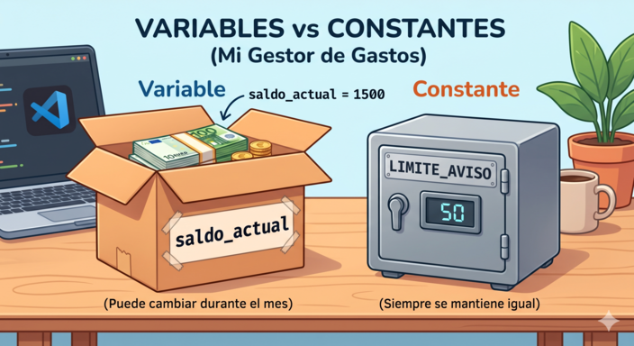
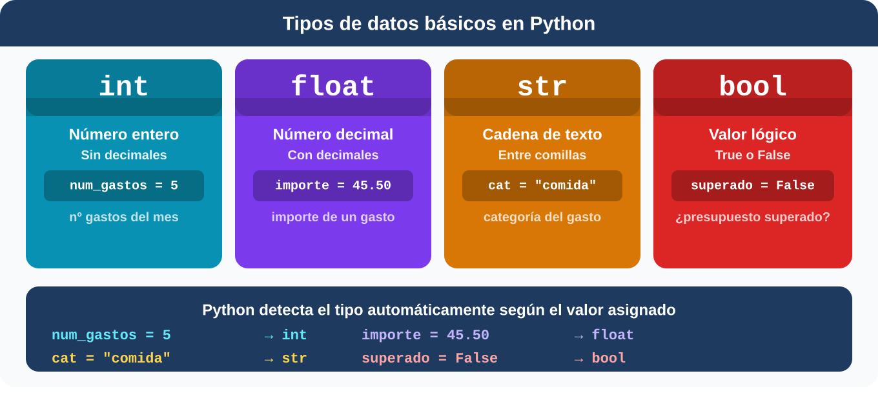

1. Variables y constantes
Para que tu Gestor de Gastos funcione, necesita recordar información: cuánto dinero tienes en la cuenta, qué has comprado o en qué fecha. En programación, para guardar esa información utilizamos variables.
Una variable es un espacio en la memoria del ordenador donde puedes guardar un dato y ponerle un nombre para usarlo después. Lo que la hace especial es que, como su nombre indica, su valor puede cambiar a lo largo del programa.
Piensa en una variable como si fuera una caja de mudanza a la que le pones una etiqueta por fuera y le metes algo dentro. En Python, crear una variable es tan fácil como escribir el nombre de la etiqueta, un signo igual (=) y el valor que quieres guardar:
saldo_actual = 1500
concepto = "Factura de la luz"
A lo largo del mes, el contenido de esa caja variará (por eso se llaman variables). Sin embargo, a veces necesitamos guardar valores fijos que nunca cambian, como un límite de presupuesto.
A estas "cajas" las llamamos constantes. En Python, para diferenciarlas, las escribimos en mayúsculas: LIMITE_AVISO = 50.
Python técnicamente te permitiría modificar ese valor, pero por convención todos los programadores saben que no deben hacerlo.

¿Cómo debes nombrar una variable?
No puedes ponerle cualquier nombre a una variable. Python tiene unas reglas que debes respetar:

Además de las reglas obligatorias, existe una convención muy usada en Python: el estilo snake_case, que consiste en escribir los nombres en minúsculas y separar las palabras con guión bajo:
# ✅ Correcto: snake_case
total_gastos = 320.50
nombre_categoria = "ocio"
# ❌ Evitar
TotalGastos = 320.50
nombreCategoria = "ocio"2. Verdadero o falso
Responde todas las preguntas del cuestionario.
00:00:
3. Tipos de datos
El ordenador necesita saber qué tipo de elemento estás guardando para saber qué puede hacer con él. En nuestro Gestor de Gastos, no tratarás igual el importe de una factura (con el que debes hacer restas) que el nombre de un supermercado. Al igual que no es lo mismo meter agua que arena en una caja. Cada tipo de dato ocupa un espacio diferente en la memoria y permite operaciones distintas.
Python tiene cuatro tipos de datos básicos que usarás constantemente en tu Gestor de Gastos:
- Enteros (int): números exactos sin decimales. Ejemplo en el Gestor: el mes del año (mes = 3).
- Decimales (float): números con decimales. ¡Ojo! En programación usamos el punto, no la coma. Ejemplo: el importe de una compra (gasto = 45.50).
- Cadenas de texto (str): palabras o frases. Siempre deben ir abrazadas por comillas. Ejemplo: la categoría (categoria = "Ocio").
- Booleanos (bool): solo pueden tener dos estados: Verdadero (True) o Falso (False). Ejemplo: saber si una factura está pagada (pagado = True).
Haz clic sobre la imagen para ampliarla

Imagen de elaboración propia generada con Claude. Tipos de datos básicos en Python (CC BY-NC-SA)

4. ¿Cómo sabe Python qué tipo de dato es cada variable?
A diferencia de otros lenguajes, en Python no necesitas declarar el tipo de dato explícitamente. Python lo detecta de forma automática según el valor que asignas. A esto se le llama tipado dinámico:
numero_gastos = 5 #Python detecta: int
importe = 45.50 # Python detecta: float
categoria = "comida" # Python detecta: str
presupuesto_superado = False # Python detecta: boolSi en algún momento quieres comprobar qué tipo de dato tiene una variable, puedes usar la función type():
print(type(importe)) # <class 'float'>
print(type(categoria)) # <class 'str'>5. Conversión entre tipos de datos
A veces necesitarás convertir un dato de un tipo a otro. Esto es especialmente importante cuando usas input(), ya que todo lo que el usuario escribe llega siempre como texto (str). Si quieres operar con ese valor matemáticamente, deberás convertirlo:
# El usuario escribe "45.50" pero Python lo recibe como texto
dato = input("Introduce el importe: ") # dato = "45.50" (str)
importe = float(dato) # importe = 45.50 (float)Recuerda: intentar sumar un número y un texto sin convertir es uno de los errores más frecuentes en Python. El propio intérprete te avisará con un mensaje de error.
6. Completa
Dato 1: float (Decimal). (Al llevar decimales separados por un punto, es un 'float').
Dato 2: str (Texto). (Recuerda que todo lo que vaya entre comillas es una cadena de texto o 'string').
Dato 3: bool (Booleano). (Solo puede ser Verdadero o Falso).
Imagina que estás introduciendo el primer movimiento del mes en tu Gestor. Selecciona el tipo de dato correcto para cada variable.
Dato 1: gasto = 34.90 La variable gasto es de tipo @@float (Decimal)|int (Entero)|str (Texto)|bool (Booleano)@@
Dato 2: tienda = "Mercadona" La variable tienda es de tipo @@str (Texto)|int (Entero)|float (Decimal)|bool (Booleano)@@
Dato 3: presupuesto_superado = False La variable presupuesto_superado es de tipo @@bool (Booleano)|int (Entero)|float (Decimal)|str (Texto)@@
7. Habla contigo mismo
Cuando escribas código, no solo lo leerá el ordenador: también lo leerás tú mismo, días o semanas después, y quizás otras personas. Los comentarios son líneas que Python ignora completamente al ejecutar el programa, pero que sirven para explicar qué hace cada parte del código.
En Python los comentarios de una sola línea se escriben con #:
# Inicializamos las variables del gestor de gastos
importe = 45.50 # Importe del gasto en euros
categoria = "comida" # Categoría a la que pertenece
PRESUPUESTO_MAXIMO = 500 # Constante: presupuesto mensualPara comentarios más largos que ocupen varias líneas se usan tres comillas:
'''
Este programa gestiona los gastos personales del usuario.
Permite registrar importes, categorías y fechas,
y avisa cuando se supera el presupuesto mensual.
'''
importe = 45.50
categoria = "comida"Un buen programador no es solo el que escribe código que funciona, sino el que escribe código que cualquiera puede entender. Acostúmbrate a comentar desde el principio.
8. Importante
Variables y constantes
Son los espacios en memoria (cajas) donde guardamos nuestra información. Las variables pueden cambiar de valor durante el programa, las constantes no.
Tipos de datos
Los más comunes son los enteros (int), los decimales (float), las cadenas de texto (str), que se escriben entre comillas, y los booleanos (bool), que pueden tomar los valores True o False."
Comentarios
Se escriben con el símbolo #. El ordenador los ignora, pero son vitales para explicar qué hace tu código y que tú (u otra persona) lo entienda en el futuro.